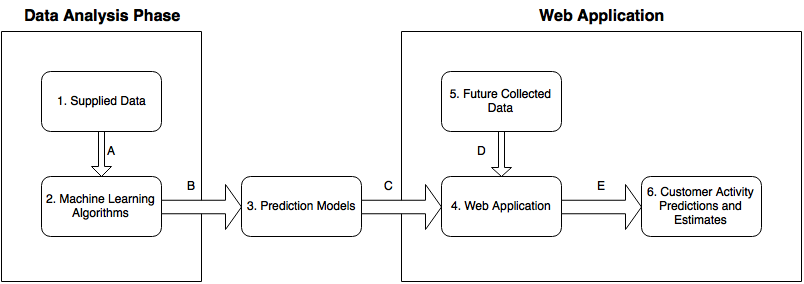
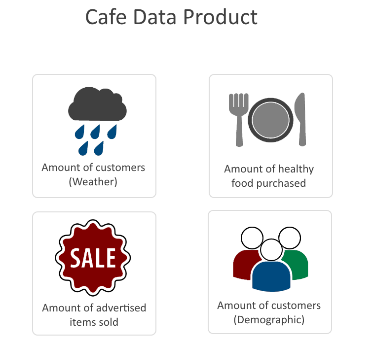
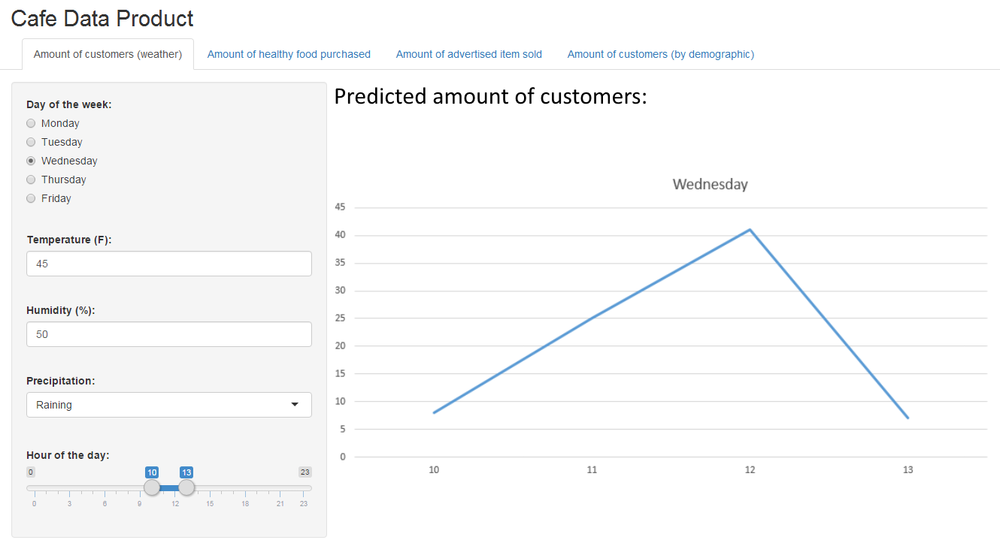
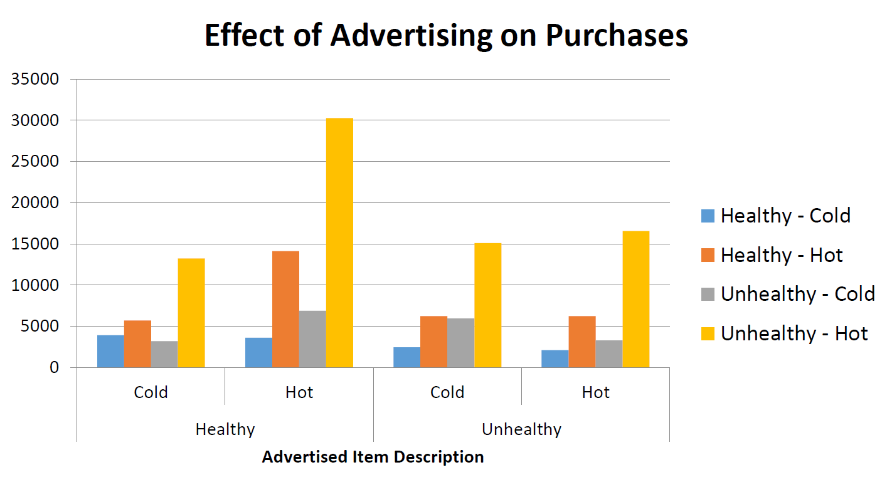
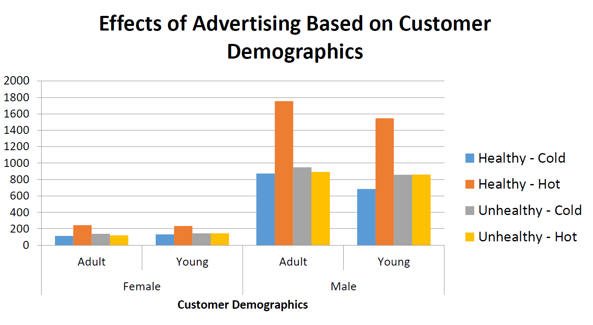
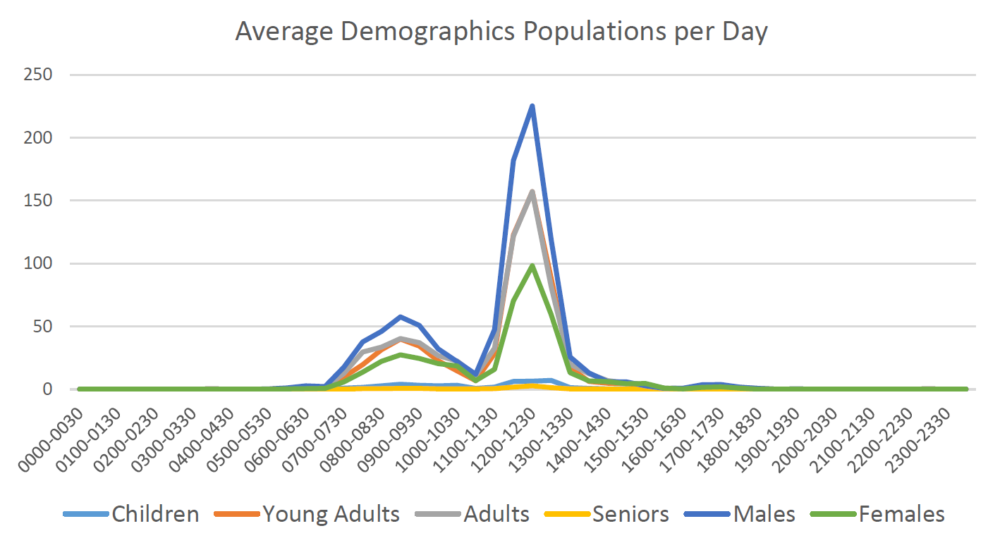
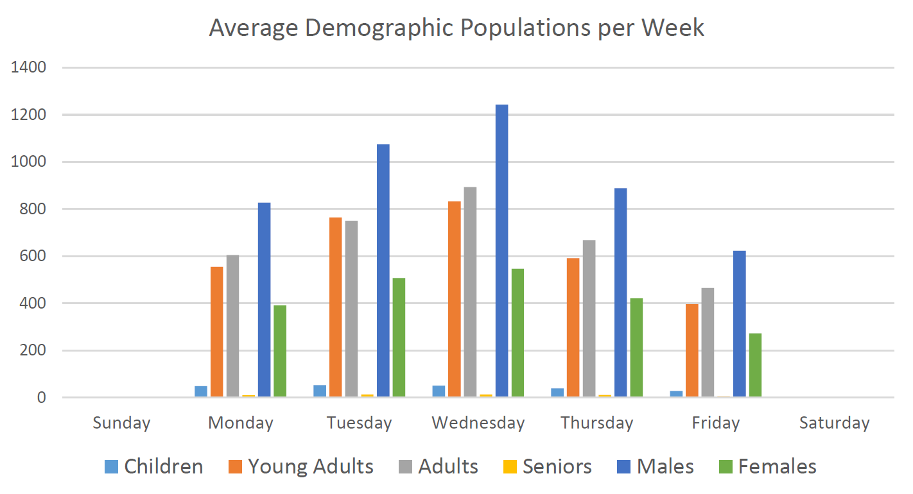
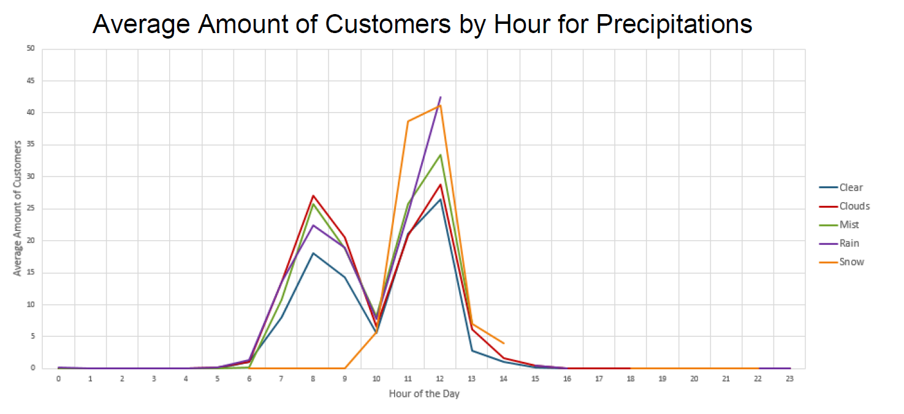
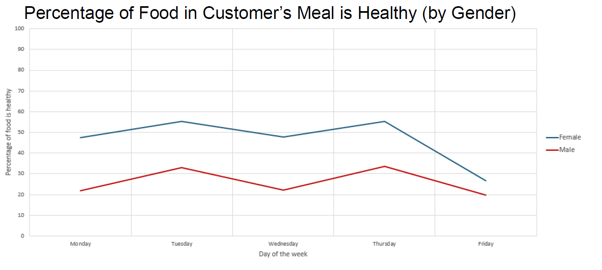
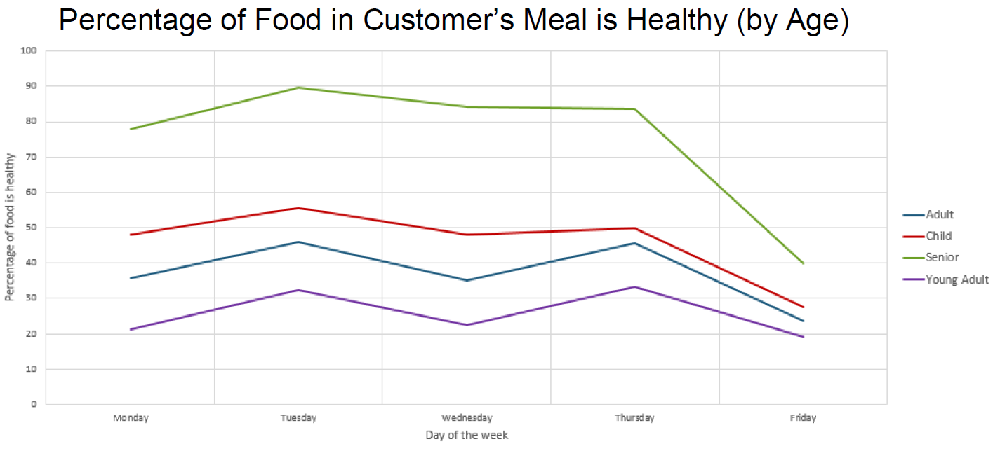

Project Design
Abstract
Introduction
In the modern world, increasing storage capacities and the connection of nearly every device to the internet allows for the collection of data sets so large and complex that they would have been nearly impossible to store only a decade ago. While the scope of such data allows us to investigate subtle trends in business, crime, and information, the analysis of these increasingly complex networks can prove difficult using traditional data processing methods. However, by using machine learning and data mining techniques, we allow for the automation of big data analysis, rendering the process of identifying trends and relationships in large data sets much more efficient.
In the next several months, our team will analyze data provided by Dr. Julie Whitney of Lexmark International, Inc., searching for trends in customer activity at a Lexmark campus cafe. Each team member will then focus on a unique aspect of customer activity and utilize machine learning techniques to develop their own predictive model for customer activity in the future. These models will then be incorporated into a web-based application that will allow the user, a manager of the cafe, to estimate staffing and supply needs based upon predicted customer activity on a user-modifiable time scale and customer demographic.
The Data Set
Included in the data set provided by Dr. Whitney are the following essential data points:
- Date and time of purchase
- Item(s) purchased
- Perceived customer age group: unknown, child, young adult, adult, or senior
- Perceived customer sex: male or female
- Time spent in the vecinity of an advertising screen
- Time spent looking at the advertising screen
- Item being advertised at time of purchase
- External temperature, humidity, and precipitation level
(Note: Some of the supplied data points have been fabricated to protect customer identities.) Our team will examine the relationships between these data point in order to find useful trends.
Machine Learning
Machine learning is a process whereby software attempts to identify trends, relationships, and patterns in sets of data without being explicitly instructed how to do so. This has a wide number of applications in many modern industries and fields, including natural language processing, robotics, computer vision, analytics, and statistics. One of these applications is data mining, which is largely interrelated with machine learning, and which is the primary focus for this project.
In addition to its many applications, there exist many strategies for the implementation of a machine learning system, though each of these may fall under one of three basic categories of tasks that may be assigned to a learning system. The first is supervised, which takes data for which a label or value is already established and attempts to understand the relationship between the data set and its labels or value. The second is unsupervised learning, wherein data sets have no associated labels or values, and the system attempts to organize the data in some meaningful way or identify a structure for the data. The third task category is reinforcement learning, wherein the system must choose an action for which it will then receive some reward according to a heuristic, such as a robotic system randomly activating actuators until it learns to stand.
For this project, our team will be using a method of supervised learning in order to establish prediction models for customer activity. Specifically, we will be using regression techniques to estimate the relationships between various data points within our data set. Ultimately, this will provide us with a model for predicting the value of selected variables given data on other parameters. For instance, we might predict the number of customers in the café based on the day and the time, or we may predict the number of hot food items sold based on the weather. A cafe manager may then use this information to staff and stock the cafe more efficiently.
Environment
The final result of the project will be a web app, which is to run in the Google Chrome, though support may easily be extended to other browsers in the future. The application will be developed using Shiny by RStudio. Data exploration and analysis can easily be performed in many modern programming languages, and results of these stages along with the machine learning stage will be a formula or algorithm which should be independent of language and environment, as long as the same methods are applied. Therefore, each team member may choose a development environment at his/her discretion, though some yield to machine learning techniques much easier than others. For instance, the client suggests languages R and Python for their ease-of-use in data analysis.
Modules
Here we show a diagram illustrating the major components of the project, as well as the interactions between components, described below.

Components
- Supplied Data: This is the data set provided by Dr. Whitney of Lexmark, which we use to identify and analyze trends and relationships in customer activity at the Lexmark campus cafe.
- Machine Learning Algorithms: We use machine learning algorithms to develop relations between data points. Ultimately, this allows us to predict the value of an unknown data point given information about related data points.
- Prediction Models: The information obtained from the machine learning stage of development will ultimately be contained within a single formula or algorithm which constitutes a prediction model. This model takes specific data points as input to predict the value of another data point.
- Web Application: The predictive models generated by the machine learning stage are implemented into a web application, allowing the user to input more data in order to predict customer activity and estimate staffing and supply needs within a user-modifiable time frame.
- Future Collected Data: Because the data we have now is not relevant to the staffing needs of a lunchtime rush hour on a Tuesday three months from now, the web application will accept future data sets in order to provide meaningful information to the user as it is requested.
- Customer Activity Predictions and Estimates: As the predictive model accepts new information, it will output predictions about customer activity within a given time frame based on a number of factors. For instance, the model may combine the knowledge that there are higher customer populations at midday, in the middle of the week, and on rainy days in order to estimate the number of customers that will enter the cafe on a rainy Wednesday's lunch hour.
Interactions
- The Supplied Data is parsed by Machine Learning Algorithms.
- The Machine Learning Algorithms produce a prediction model after parsing the Supplied Data.
- The prediction model is implemented in the Web Application via a web programming language such as JavaScript or PHP.
- Future data is received as input into the Web Application, where the prediction model processes it to predict customer activity.
- The Web Application outputs meaningful information (Customer Activity Predictions and Estimates) based on the input data and the user's selected parameters.
User Screens
The dashboard our users will use will be made using Shiny by RStudio. The user will begin the session by opening up the webpage to the dashboard. Once the user is at the dashboard they will have several different options they may select, each containing a different predicting algorithm. Here is an example screen of what the dashboard will look like when the user first logs in:

The user will then select one of these predicting algorithms to be taken directly to its page. Here is an example of the dashboard after the user enters variables into one of our algorithms:

Once a user selects a predictor, they will be able to select any of the other predictors at the top of the webpage at any time. Depending on the selected predictor, input fields on the left side of the screen will change based on what variables the algorithm needs. The fields will be filled with default values and the algorithm already executed with those values and displayed on the right side of the page as a graph or chart. The user may then manipulate any of the variable fields with valid input and the predictor's graph will update as the user changes these fields.
User scenarios
- User opens up the dashboard presented with a login screen.
- User enters valid credentials and logs in.
- The home screen displays the different available predicting algorithms for use.
- User clicks on the desired predictor to be taken to its page.
- The user will be presented with input fields for each of the algorithm's variables and will fill out the fields with values of what they want predicted.
- Graph on the predictor's page will update once the user has entered their values.
- The user can then use tabs at the top of the page to switch to another predicting algorithm's page.
- User may select a button to return to the original dashboard home page.
- User may click on the log out button at any time to end their session.
Design Considerations
The client indicated that the project was largely designed to serve as a course in machine learning for the development team, as opposed to a request for a professionally developed product. For this reason, we as a development team were given a large amount of flexibility in the way we approached the client's specifications. As a result, we chose to focus largely on establishing accurate prediction models for the given data, providing us with a greater understanding of the underlying techniques, while assigning secondary importance to the production of a high-quality application interface.
During the machine learning stage of development, we are using regression techniques, a subset of supervised learning, to establish prediction models. We use regression because it is the technique which is most suited for establishing prediction models based upon established data sets with continuous (rather than discrete) values. To make this stage of development easier, we are using programming languages such as R and Python which provide better internal and library support for machine learning and numerical analysis tasks.
Because the final product is to be utilized by business owners/operators, the design must be readily usable on almost any system that the business may use, eliminating the need for a business to utilize a specific system in order to make use of the product. In order to address this, the application will be run via a web browser, making it available to nearly every modern system in the world. In order to ensure the security of the user's data, the data will not be uploaded to the server, and instead will be processed client-side. For additional security, the application will require the user to sign in, preventing other users from accessing his/her data.
The client also emphasized that the web application should be easy to understand, eliminating the need for the end-user to have any technical expertise, and easy to expand, allowing new prediction models to be implemented into the application dashboard. To this end, we focus on using large, easy-to-read print, simple language, and minimalistic design in order to provide an easily understood experience for the user. Additionally, we implement the prediction models as individual modules in the dashboard, allowing models to be added, removed, or edited without affecting the rest of the application.
Size Estimate
The project is split into three major sections, each size estimated individually below:
- Data Parser: Used to parse the provided data set, preprocess the data, and implement machine learning algorithms to analyze the data - (2000 lines)
- 3x Prediction Models: Some prediction models can be quite simplistic, such as a single formula taking a small number of variables to obtain a certain output. Others are much more complex, requiring a medium to large algorithm to generate predictions from input data - (500 lines each)
- In-Browser Dashboard: This constitutes the user interface of our product, and determines how the user navigates different screens in the application. Here we detail how interfaces behave, and how the display should look - (750 lines)
Tentative Schedule
| March 21: | First Guess Predictors Constructors |
| March 28: | Dashboard Prototype Built. |
| April 4: | Final Predictor Opimizations Completed. |
| Testing Plan Established. | |
| April 9: | Final Testing Phase Completed. |
Further Documentation
Below are several graphs and charts which illustrate trends that we have identified within the provided data set.
The following two graphs establish the relationship between advertising and the purchase of the advertised product.


The next two charts show the average customer populations, separated by demographics, with respect to the time of day and with respect to the day of the week.


The next chart shows the average amount of customers in the cafe at a given hour based upon outside precipitation.

The next two charts show the percentage of healthy food in a customer's meal based upon customer gender and upon customer age.

